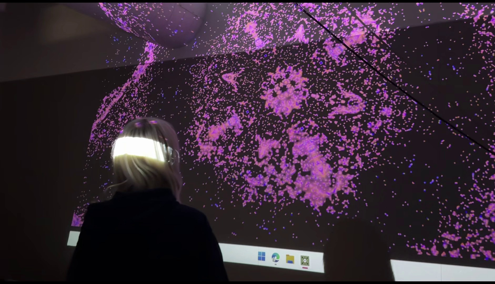
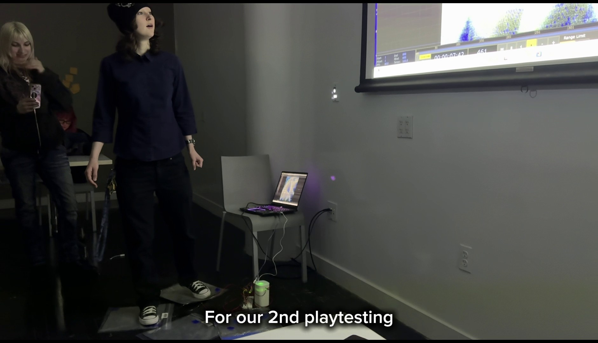
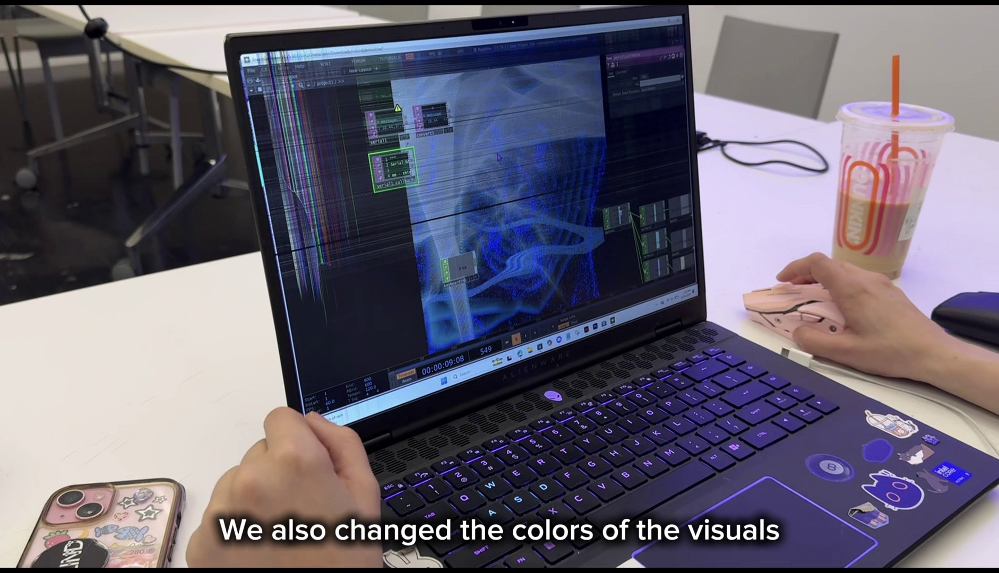
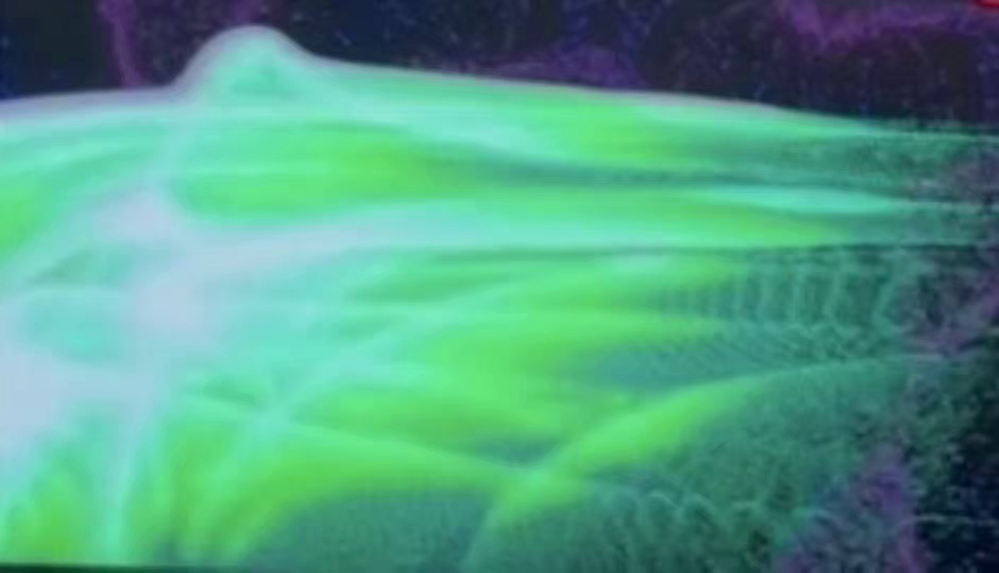

Color DJ is an interactive installation that turns a room into a living, sensory DJ set. The space is divided into four quadrants—each mapped to its own sound loop, projected color palette, and ambient scent. As participants move between zones, music layers and mixes, colors bleed and remix across the walls, and scents shift. The crowd becomes the DJ through presence and movement alone.
Built for young adults navigating overwhelm and burnout, the piece offers intentional sensory immersion rather than silence: soft sound, shifting color, and scent work together to slow the nervous system. Participants move from passive, anxious states into active but effortless presence—grounded, decompressed, and in control of the room’s atmosphere.
I built and programmed the interactive visual system in TouchDesigner (with Evie Shapiro), designing real-time projections that respond to where people stand in the room. Each quadrant carries a distinct visual identity tied to genre research—afro, alt pop, house, and jazz—so color, motion, and texture remix as bodies cross boundaries. Sensor data from Arduino and capacitive floor pads feeds into the patch, blending zones when multiple people occupy the space.
The full installation combines TouchDesigner visuals, curated sound and scent (Asa Birgisdottir & Mehak Garg), Arduino sensing and physical build (Zhaniya Kenes), and a dark-room presentation for 10–15 people. Prototyping moved from distance sensors and foil touch pads to quadrant-based human detection, relay-controlled diffusion, and iterative playtesting before the final show.


